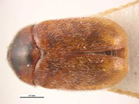
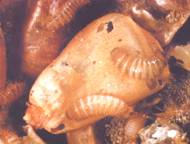

| Home |
| SUGARCANE |
PRIMARY STORAGE PEST |
INTERNAL FEEDERS |
| 1. Rice weevil |
| 2. Lesser grain borer |
| 3. Angoumois grain moth |
| 4. Pulse beetle |
| 5. Cigarette beetle |
| 6. Drug store beetle |
| 7. Tamarind Beetle |
| 8. Sweet Potato weevil |
| 9. Potato tuber moth |
| 10. Arecanut beetle |
EXTERNAL FEEDERS |
| 11. Red flour beetle |
| 12. Indian meal moth |
| 13. Fig moth or almond moth |
| 14. Rice moth |
| 15. Khapra beetle |
SECONDARY STORAGE PEST |
| 16. Saw toothed grain beetle |
| 17. Long headed flour beetle |
| 18. Flat grain beetle |
| 19. Grain lice |
| 20. Grain mite |
| Questions |
| Download Notes |
STORED GRAIN :: PRIMARY STORAGE PEST :: INTERNAL FEEDERS :: KHAPRA BEETLE
15. Khapra beetle: Trogoderma granarium (Dermestidae: Coleoptera)
Distribution and status: Worldwide
Host range
The Khapra beetle will attack any dried plant or animal matter. It prefers grain and cereal products, mainly wheat, barley, oats, rye, maize, rice, flour, malt, and noodles. It can also feed on animal products such as dead mice, dried blood, and dried insects
Bionomics :
The insect breeds from April to October and hibernates in the larval stage from November to March in cracks and crevices. Female begins to lay white translucent eggs on the grains, singly or sometimes in clusters of 2 -5. The eggs are rather cylindrical, rounded at one end and narrow at the other. A female may lay 13 - 35 eggs in 1 - 7 days at the rate of 1 - 26 eggs per day. The egg period varies from 3 -10 days. Larval period is 20 - 40 days and pupal period is 4 - 6 days. Pupation takes place in the last larval skin among the grains. The adults are incapable of flying. There are 4-5 generations in a year.
Fresh yellowish-white larva grows 4mm long and turns brown. The adult is a small dark-brown beetle, 2-3 mm long, with a retractile head and clubbed antennae. The entire body is clothed in fine hairs.
Damage symptoms :
The greatest damage is done in summer from July to October. The grubs eat the grain near the embryo or at any other weak point and from there proceed inwards. They usually confine themselves to the upper 50 cm layer of grains in a heap or to the periphery in a sack of grains. They can reduce the grain to a mere frass. Since the larvae are positively thigmotactic, they can be collected by merely placing gunny bags on a heap of grain.
|  |